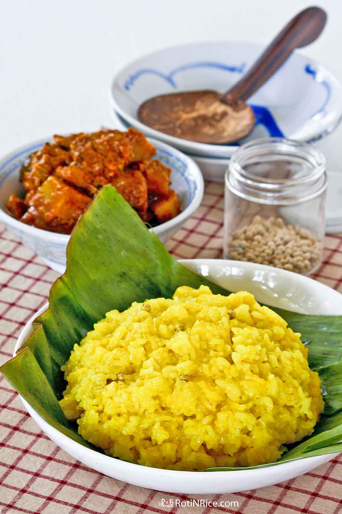

Turmeric Glutinous Rice

Description
Nasi Kunyit is a celebratory rice dish served during weddings and special occasions. It is glutinous rice cooked in coconut milk and turmeric.
Ingredients
- 1½ cups glutinous rice (300g)
- ½ tsp ground turmeric
- 2 tsp lime juice
- 1 tsp salt
- 20 white peppercorns
- 2 pandan leaves (shredded and knotted)
- ¾ cup coconut milk (180ml)